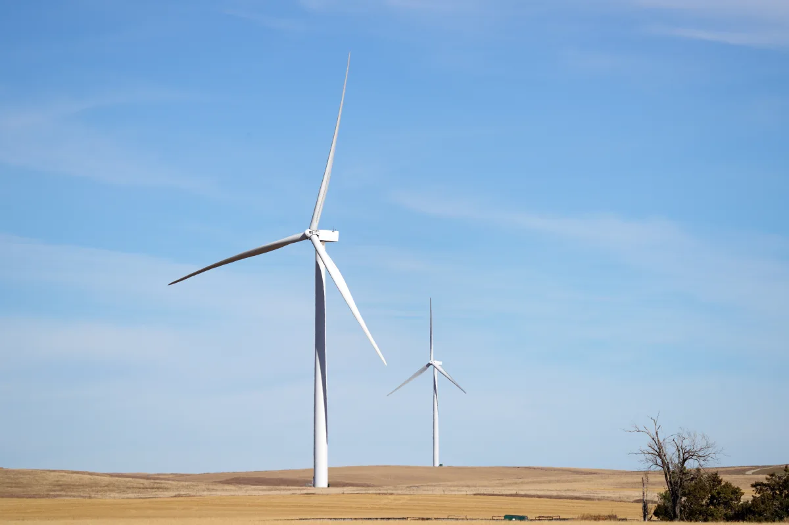

Control del tratamiento térmico de engranajes eólicos
Compare la cementación profunda y la nitruración controlada según el material, la capa requerida y la distorsión admisible.
Consultar sobre su aplicación
Requisitos de proceso y control
| Aplicación | Qué revisar |
|---|---|
| Cementación profunda | Para engranajes con una capa profunda, revise la carga, las etapas de enriquecimiento y difusión, el potencial de carbono y la distorsión tras el temple. |
| Nitruración gaseosa controlada | Para aceros adecuados, revise el potencial de nitruración, la temperatura, el tiempo y los límites de la capa de compuestos. |
| Verificación y registros | Acuerde los puntos de medición, los métodos de profundidad y dureza y los registros que acompañarán a cada lote. |
Procesos, productos y lecturas relacionados
Consultar sobre su aplicación
Indique las dimensiones, la aleación, los requisitos de capa, la distorsión admisible y la configuración del horno.